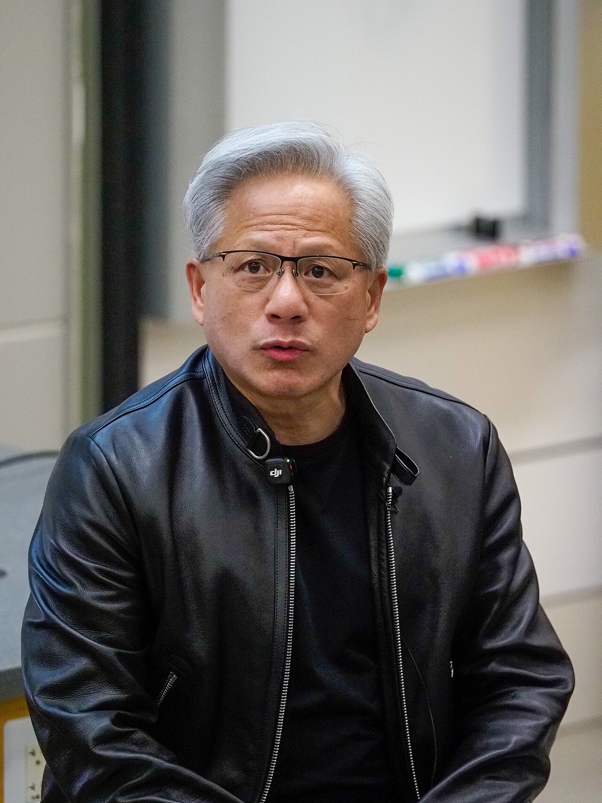
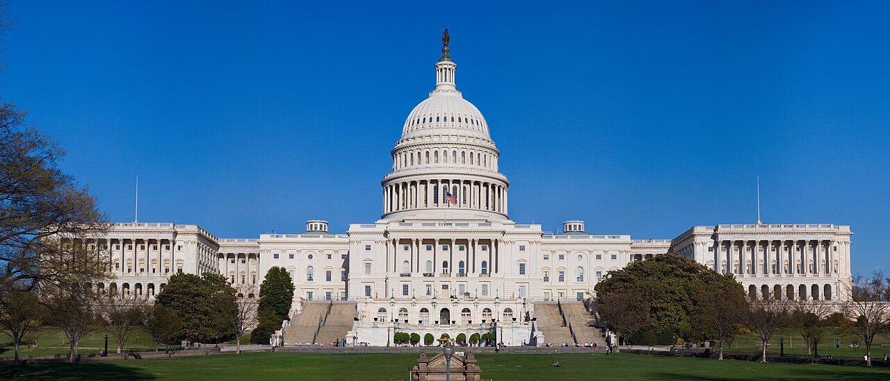
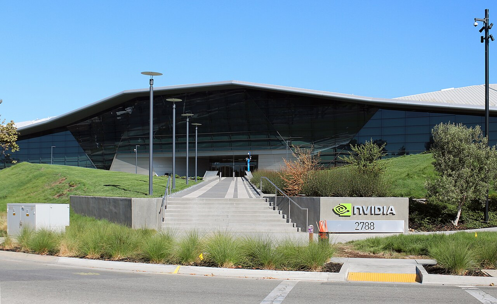

The former Nvidia CEO resigned on November 12, 2026, amid a board probe into reports he was the target of a foreign intelligence effort. This page lays out what is verified, what is still unconfirmed, and why a full, independent investigation — and prosecution if it finds crimes — is warranted.

Want a full, independent investigation with public findings?
Add your name to the petition calling on Congress and the Department of Justice to investigate — and to prosecute if the evidence supports it.
Sign the petition on Change.orgVerifiedNovember 8, 2026 — Nvidia board opens an independent investigation. The board announced it was "initiating an independent investigation in light of recent reporting that founder and CEO Jensen Huang has been the target of a foreign intelligence effort," overseen by independent directors and outside counsel. The board said it had "no reason to believe that either national security or NVIDIA secrets were compromised," but that the inquiry "will examine all available information." The board statement does not mention an affair, Alice Huang, Megaspeed, or chip sales. Source: Nvidia board statement
VerifiedNovember 8, 2026 — Huang admits infidelity. In a memo to employees the same day, Huang wrote: "I was unfaithful to my wife. My actions hurt her and our children. There is no excuse for what I did." He did not name the other person. He said he supports the board investigation and will cooperate. Source: CNN
VerifiedNovember 11–12, 2026 — Huang resigns. The board accepted Huang's resignation as President, CEO, and board member on November 11 (SEC 8-K); it was announced November 12. CFO Colette Kress became interim CEO. Harvey C. Jones became the board's first-ever chair.
VerifiedNovember 5, 2026 — House chairs request a briefing. The chairs of the House Foreign Affairs, Select Committee on China, and Intelligence committees asked Huang for a closed-door briefing on November 18, 2026, on his interactions with Alice Huang and Nvidia's security protocols. This was a request, not a subpoena. Source: House Foreign Affairs release

VerifiedThird-party Nvidia chip smuggling is real — but Huang and Nvidia are not defendants. Enforcement cases document large-scale smuggling of Nvidia chips to China by third parties: Singapore's Aperia Group case (Feb 2025), DOJ Operation Gatekeeper (guilty plea, Dec 2025, $160m), and a Supermicro-linked indictment (Mar 2026, ~$510m alleged diverted). In none of these cases is Nvidia or Huang charged. Source: DOJ Operation Gatekeeper

VerifiedMarket reaction. Nvidia stock closed November 11 at $173.73 and traded as low as $160.43 on November 12 (down 7.66%), roughly 33% below its October 6 peak of $239.24. The stock was already down about 22% from its October high before November 9, in a broader AI-sector selloff, so the whole move cannot be attributed to the probe alone.
These claims come from named outlets citing anonymous sources or a classified memo that has not been published. They are not established facts.
Reported — unconfirmedAlice Huang was the affair partner. The New York Times (Oct 29, 2026) and Financial Times (Nov 6, 2026) identified Alice Huang — a Megaspeed executive, no relation to Jensen Huang — as the other party. Huang himself never named her.
Reported — unconfirmedAlice Huang was recruited by China's Ministry of State Security. The NYT and FT reported, citing a classified US memo and unnamed officials, that Alice Huang was a Chinese intelligence asset. The memo has not been published. Alice Huang has not been charged in any country and has not commented publicly. China denies the allegation.
Reported — unconfirmedMegaspeed diverted restricted Nvidia chips to China. The US Commerce Department (BIS) began investigating Megaspeed in late 2024; the case became a DOJ criminal inquiry in 2026. Trade-record figures cited in reporting ($4.6bn–$7.5bn) measure equipment purchases/imports, not proven diversion. No charge has been filed against Megaspeed, and it denies wrongdoing.
Reported — unconfirmedThe FBI is investigating Huang. President Trump said on November 9, 2026, "I know the FBI is looking into it." The FBI declined to comment. No FBI or DOJ statement confirms a formal investigation, its target, or its scope.
Not proven That Huang knew of any intelligence role, or shared Nvidia or national-security secrets. No public report says he did. The board said it has "no reason to believe" secrets were compromised.
Not proven That Nvidia illegally sold or diverted chips to China. No charge has been filed against Nvidia, and Nvidia denies it.
Not proven That Huang directed any chip sale to China. No public evidence links him to a sale.
The case for investigation does not depend on the unconfirmed claims being true. It rests on what is already verified:
An investigation is not a verdict. It is the process by which the public learns whether the unconfirmed reporting is true, whether any secrets were compromised, and whether any laws were broken. The alternative — letting the board's internal probe end quietly, with no public findings — leaves the central questions unanswered.
Prosecution is not the same as investigation. To prosecute, the government would need evidence that a specific crime was committed, and a prosecutor would need to file charges. No charges have been filed against Jensen Huang.
This page calls for prosecution if an investigation finds evidence of criminal conduct — for example, if it establishes that classified or export-controlled information was shared, that export controls were knowingly evaded, or that investors were defrauded. If an investigation finds no wrongdoing, there should be no prosecution. The point is that the determination should come from a thorough, independent investigation with public findings — not from silence.
Sign the petition on Change.org to add your name to these demands.